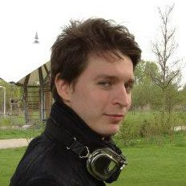

Short Bio

E-mail: famontesi at gmail dot com
Institutional e-mail: fmontesi at imada dot sdu dot dk
My Curriculum Vitae
I am an Assistant Professor
at the
University of Southern Denmark
and a founder member of
italianaSoftware s.r.l..
My work involves the design and development of programming languages for concurrent systems.
In particular, I authored and currently maintain the
Jolie programming language,
and I am developing strongly-typed languages for safe global programming.
You can read more about my research in my
research page.
italianaSoftware s.r.l. is
an award-winning start-up company
that develops service-oriented solutions using Jolie, located in Imola (Italy).
I am also an external collaborator of the
FOCUS Research Team,
led by Prof.
Davide Sangiorgi.
The FOCUS Team is the first joint research group formed through a collaboration between
INRIA (France) and the
University of Bologna (Italy).
Currently, I am the Principal Investigator of the
CRC Project (Choreographies for Reliable and efficient Communication software), which is funded by a research grant given by the Danish Council for Independent Research (DFF) - Technology and Production.
What I do
I research and develop formal mathematical models and practical implementations of programming languages, with particular emphasis on applications to distributed programming and software integration.
Essentially, I develop models and techniques for building software that runs on networks (for example, the Internet), with the following objectives:
- Critical software does not go into unexpected errors. For example, the software running on a plane should not crash (and make the plane crash).
- Network software is sufficiently efficient. For example, messages about money exchanges should be delivered in due time.
- The complexity of network software, even over thousands or millions of involved parties, is kept maintainable and affordable. For example, services for broad public audiences should not be overly expensive due to the big user base. Also, it must be possible to reuse systems developed previously in new systems when tackling new ideas and requirements.
- New software should be able to seamlessly integrate with existing systems, even when using multiple different data formats or communication protocols.
More technically, my main efforts focus on:
- Language primitives for communications over networks (virtual or physical), in particular based on Choreographies and Business Processes.
- Runtime execution techniques for sessions and multi -process/-threaded applications.
- Static analyses for deadlock-freedom and formal protocol compliance.